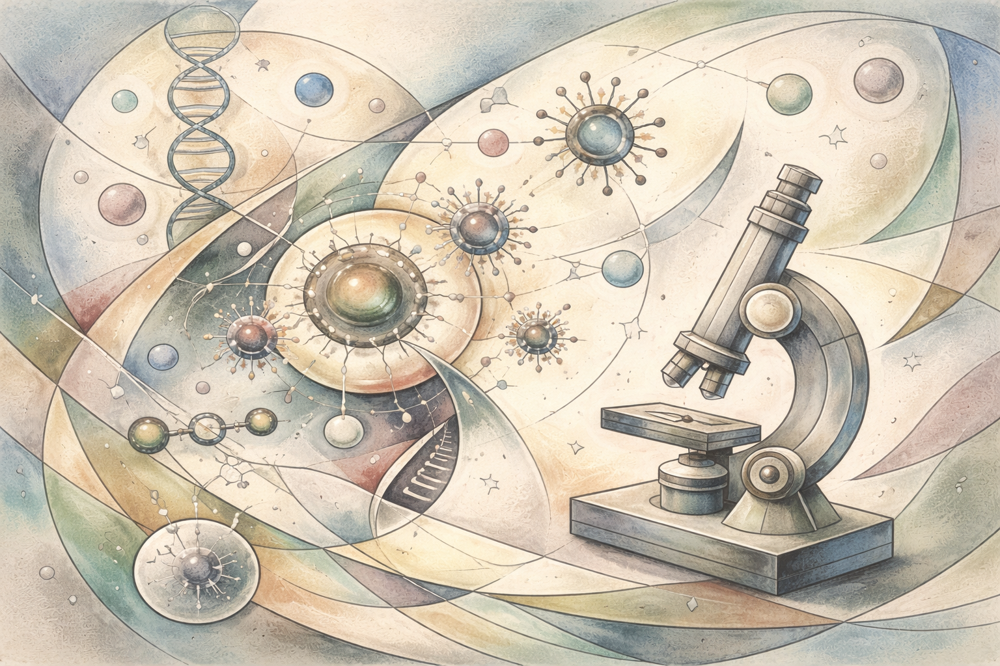
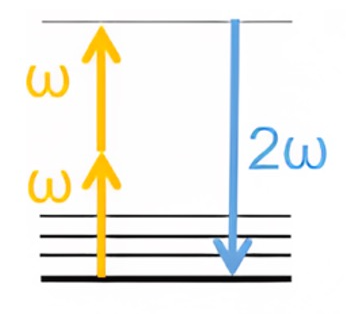
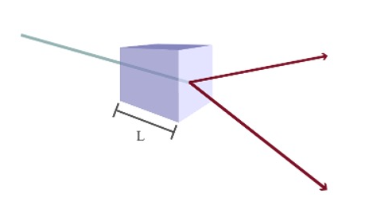
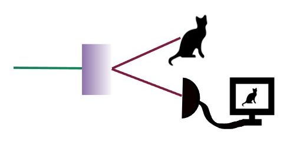

Ο περίεργος κόσμος των φωτονίων
Ένας από τους πιο συναρπαστικούς τομείς της φυσικής είναι η κβαντική φυσική που καταφέρνει να γίνει ακόμα πιο ενδιαφέρουσα όταν εφαρμοστεί στη μελέτη φαινομένων της οπτικής. Η κβαντική οπτική είναι ο κλάδος ο οποίος ασχολείται με τη συμπεριφορά των φωτονίων. Σήμερα έχουμε την δυνατότητα να ελέγξουμε μεμονωμένα φωτόνια, κάτι που δεν είναι εφικτό στα πλαίσια της κλασικής φυσικής, για να εξετάσουμε ακόμα και τα πιο «παράλογα» φαινόμενα της κβαντικής όπως η κβαντική σύμπλεξη και οι κβαντικές συσχετίσεις. Όταν φωτόνια με κβαντικές ιδιότητες αλληλεπιδρούν με την ύλη τότε αναδύονται φαινόμενα που ήταν αδιανόητο να συμβούν με κλασικές ακτίνες φωτός. Έχουμε πλέον την ευκαιρία να εφεύρουμε καινούργιες τεχνολογίες που μπορούν να ενισχύσουν τις δυνατότητες της βιολογίας και ιατρικής. Σε αυτό το άρθρο θα παρουσιάσουμε πώς η κβαντικής οπτική μπορεί να αλλάξει τον τομέα της ακτινοδιαγνωστικής.
Η σύγχρονη φυσική επιστήμη χαρακτηρίζεται από τεχνικές που πριν λίγα χρόνια ήταν αδιανόητες. Μετά από χρόνια τεχνολογικής εξέλιξης, τώρα έχουμε την δυνατότητα να ελέγξουμε ακόμα και τα πιο φευγαλέα είδη ύλης, τα φωτόνια. Με την χρήση του φωτός, έχουμε αποκτήσει την δυνατότητα να δούμε πέρα από αυτό που είναι δυνατόν με τα ανθρώπινα μάτια, από μικροσκοπικές βιολογικές δομές, όπως κύτταρα, έως και το εσωτερικό έμβιων οργανισμών. Αυτό δεν μας βοηθά μόνο στο να αποκτήσουμε πληροφορίες για τους βιολογικούς μηχανισμούς τους, αλλά έχει επίσης επιτρέψει τον έλεγχο της γενετικής τους δυναμικής. Αυτό είχε ως αποτέλεσμα την δυνατότητα να καταπολεμήσουμε ασθένειες και την δημιουργία νέων κλάδων όπως η οπτογενετική[1] (optogenetics).
Γενικότερα, όσες τεχνολογίες χρησιμοποιούν τις δυνατότητες του φωτός ονομάζονται φωτονικές τεχνολογίες, και χρησιμοποιούνται ευρέως στην ιατρική και την βιολογία. Μια από τις πιο διαδεδομένες τεχνικές είναι αυτή της απορρόφησης ακτινοβολίας από την ύλη, η οποία έχει βοηθήσει την περαιτέρω ανάπτυξη της μικροσκοπίας. Για παράδειγμα, όταν βιολογικά δείγματα τοποθετούνται πάνω στο μικροσκόπιο, η ακτινοβολία από λέιζερ αλληλεπιδρά με τις υποατομικές δομές των δειγμάτων με αποτέλεσμα την διέγερση της ύλης. Μετά από ελάχιστο χρονικό διάστημα το διεγερμένο άτομο επανέρχεται στην αρχική του κατάσταση, εκπέμποντας φωτόνια. Τα οπτικά μέρη του μικροσκοπίου συλλέγουν τα φωτόνια αυτά και η δομή των βιολογικών δειγμάτων μεγεθύνεται με αποτέλεσμα την παρατήρηση της.
Η διέγερση της ύλης γίνεται εφικτή μόνο όταν φωτόνια με συγκεκριμένη ενέργεια αλληλεπιδρούν με τα άτομα της ύλης. Συνήθως, τα άτομα αυτά αρχικά βρίσκονται σε ένα από τα χαμηλότερα επίπεδα ενέργειας (energy levels). Τα φωτόνια πρέπει να έχουν το σωστό μήκος κύματος ώστε τα άτομα να μπορέσουν να διεγερθούν σε ένα επίπεδο υψηλότερης ενέργειας αφού απορροφήσουν τα φωτόνια. Λόγω της ύπαρξης διάφορων ενεργειακών υποσταθμών ανάμεσα στα ξεχωριστά επίπεδα ενέργειας, κάποιες φορές η απορρόφηση δύο ή περισσότερο φωτονίων είναι αναγκαία για να διεγερθεί το άτομο στο επίπεδο με την υψηλότερη ενέργεια. Στην περίπτωση που χρειάζεται ένα ζευγάρι φωτονίων τότε το φαινόμενο ονομάζεται απορρόφηση δυο φωτονίων (two-photon absorption). Ένα παράδειγμα αυτού του φαινόμενου βλέπουμε στην Εικ.1.

Εικ.1. Εισερχομένη ακτινοβολία με συχνότητα ω απορροφάται από τα άτομα τα οποία διεγείρονται σε ένα επίπεδο υψηλότερης ενέργειας από το αρχικό. Στην συνέχεια επιστρέφουν στο αρχικό τους ενεργειακό επίπεδο αφού εκπέμψουν ένα φωτόνιο σε συχνότητα που καθορίζεται από τη διαφορά ενεργειακών σταθμών και σε ορισμένες περιπτώσεις με συχνότητα 2ω.
Αν και αυτή η τεχνική μας επιτρέπει την απεικόνιση (imaging) δομών σε πολύ μικρές κλίμακες, συνοδεύεται από ορισμένους περιορισμούς. Το φαινόμενο ανήκει στη λεγόμενη μη γραμμική οπτική (nonlinear optics), όπου η ένταση της εκπεμπόμενης ακτινοβολίας από τα άτομα της βιολογικής ύλης είναι ανάλογη με το τετράγωνο της έντασης των εισερχόμενων φωτονίων (Georgiades et al., 1995). Αυτό σημαίνει ότι απαιτούνται πολύ υψηλές εντάσεις φωτός, ώστε να είναι πιθανή η ταυτόχρονη αλληλεπίδραση περισσότερων του ενός φωτονίων με το δείγμα. Ωστόσο, τέτοιες εντάσεις μπορεί να προκαλέσουν φθορά ή και καταστροφή του. Επιπλέον, η ενεργός διατομή απορρόφησης (absorption cross section), δηλαδή ένα μέτρο της πιθανότητας απορρόφησης φωτονίων από την ύλη, είναι εξαιρετικά μικρή. Ως αποτέλεσμα, η παραγόμενη ακτινοβολία είναι πολύ ασθενής και η ανίχνευσή της απαιτεί ιδιαίτερα ευαίσθητους ανιχνευτές.
Για να ξεπεραστούν αυτές οι δυσκολίες, μια νέα τεχνική προτάθηκε το 1990 . Συγκεκριμένα, οι Javanainen και Gould πρότειναν αντί για την χρήση κλασσικής μορφής ακτινοβολίας για την διέγερση των ατόμων, την χρήση σύμπλεκτων φωτονίων (entangled photons) (Javanainen & Gould, 1990). Έκτοτε, έχουν ολοκληρωθεί πολυάριθμες μελέτες, οι οποίες επιβεβαίωσαν την θεωρία τους (Dickinson al., 2025; Varnavski et al., 2023). Η χρήση ζευγών συμπλεγμένων φωτονίων μπορεί όντως να αυξήσει την πιθανότητα απορρόφησης φωτονίων, κάνοντας το φαινόμενο πιο αποτελεσματικό. Μα τι είναι τα σύμπλεκτα φωτόνια και πως τα δημιουργούμε; Για να τα καταλάβουμε αυτά πρέπει να εξερευνήσουμε τα φαινόμενα της κβαντικής μηχανικής.
ΚΒΑΝΤΙΚΗ ΣΥΜΠΛΕΞΗ, ΣΥΣΧΕΤΙΣΕΙΣ ΚΑΙ ΔΗΜΙΟΥΡΓΙΑ ΣΥΜΠΛΕΓΜΕΝΩΝ ΦΩΤΟΝΙΩΝ
Η σύμπλεξη φωτονίων είναι ένα από αυτά τα κβαντικά φαινόμενα που δοκιμάζουν τα όρια της λογικής και φαντασίας μας. Σύμπλεκτα φωτόνια χρησιμοποιούνται σήμερα σε πειράματα που αφορούν το παράδοξο των Einstein-Podolsky-Rosen (EPR paradox) και την επαλήθευση της κβαντικής φύσης των παραγόμενων φωτονίων (Einstein et al., 1935). Ως γνωστόν, το EPR είναι ένα νοητό πείραμα (gedankenexperiment) που σχεδιάστηκε για να διαψεύσει την κβαντική μηχανική και τις βασικές της αρχές, τονίζοντας ότι η υπέρθεση[2] (superposition principle) και η κβαντική σύμπλεξη[3] (quantum entanglement) παραβιάζουν τις αρχές της τοπικότητας[4] (locality) και της αβεβαιότητας[5] (uncertainty principle).
Η κβαντική κατάσταση κάθε σύμπλεκτου φωτονίου δεν μπορεί να εκφραστεί μεμονωμένα, χωρίς την περιγραφή των υπόλοιπων φωτονίων που είναι συμπλεγμένα μαζί του. Λόγω της αλληλεπίδρασης αυτής, όταν εκτελούμε μια μέτρηση σε ένα φωτόνιο, η κατάσταση των υπολοίπων καθορίζεται ακαριαία ανεξάρτητα από το πόσο μακριά είναι τα φωτόνια μεταξύ τους. Οι Einstein, Podolsky και Rοsen πίστευαν ότι με αυτό τον τρόπο τα φωτόνια επηρεάζουν το ένα το άλλο πιο γρήγορα από την ταχύτητα του φωτός, κάτι που η Θεωρία της Σχετικότητας απαγορεύει, συνεπώς η Κβαντική είναι μια ελλιπής θεωρία. Στην πραγματικότητα όμως όταν γίνεται μια αρχική μεμονωμένη μέτρηση, το αποτέλεσμά της είναι τυχαίο. Με άλλα λόγια, η μέτρηση θα μπορούσε να αποκαλύψει οποιαδήποτε από τις πιθανές καταστάσεις που θα μπορούσε να έχει το φωτόνιο, και δεν υπάρχει κάποιος τρόπος για να γνωρίζουμε ποια θα είναι εκ των προτέρων ώστε να στείλουμε μήνυμα στον άλλο παρατηρητή. Οι συσχετίσεις αυτές αποκαλύπτονται μόνο όταν συγκριθούν τα αποτελέσματα των μετρήσεων εκ των υστέρων, μέσω κλασικής επικοινωνίας (που περιορίζεται από την ταχύτητα του φωτός). Επομένως, δεν υπάρχει μετάδοση πληροφορίας με ταχύτητα μεγαλύτερη αυτής του φωτός. Με άλλα λόγια, η σύμπλεξη φαίνεται «μη τοπική» ως προς τις συσχετίσεις, αλλά παραμένει συμβατή με την τοπικότητα ως προς την αιτιότητα και τη μεταφορά πληροφορίας. Το 1964, τριάντα χρόνια μετά από τη δημοσίευση των ΕPR, ο John Stewart Bell με την διατύπωση του ελέγχου της ανισότητας του Bell (Bell’s inequality test) απέδειξε πως οι προβλέψεις της κβαντικής μηχανικής δεν μπορούν να αναπαραχθούν από τοπικές θεωρίες με κρυφές μεταβλητές (Bell, 1964). Μέχρι σήμερα όλα τα πειράματα πάνω σε κβαντικά συστήματα που έχουν κάνει χρήση του κριτηρίου του Bell έχουν επιβεβαιώσει την εγκυρότητα των προβλέψεων της κβαντικής μηχανικής και την ύπαρξη συσχετίσεων (correlations) μεταξύ διαφόρων παραμέτρων των σύμπλεκτων φωτονίων (Bell, 1976; Clauser et al., 1978).
Για να καταλάβουμε καλύτερα τις συσχετίσεις μεταξύ των συμπλεγμένων φωτονίων πρέπει να εστιάσουμε στον τρόπο που χρησιμοποιούμε για να τα παράγουμε. Στο εργαστήριο χρησιμοποιούμε το φαινόμενο της αυθόρμητης παραμετρικής μετατροπής προς χαμηλότερες συχνότητες (spontaneous parametric down conversion) όπου ένα φωτόνιο ενός λέιζερ μετατρέπεται σε ένα ζεύγος φωτονίων χαμηλότερης ενέργειας, σύμφωνα με τους νόμους της διατήρησης ενέργειας και ορμής. Αυτό σημαίνει πως η συνισταμένη της ορμής των παραχθέντων φωτονίων είναι ίση με την ορμή του αρχικού φωτονίου. Κάτι αντίστοιχο ισχύει και με την ενέργεια του ζεύγους φωτονίων. Σε πολλές περιπτώσεις τα δύο φωτόνια έχουν περίπου τη μισή ενέργεια το καθένα (επομένως και διπλάσιο μήκος κύματος), αλλά γενικά η ενέργεια κατανέμεται σύμφωνα με την αρχή διατήρηση της ενέργειας (Couteau, 2018). Μια απεικόνιση αυτού του φαινομένου βλέπουμε στη Εικ.2.

Εικ.2 Απεικόνιση δημιουργίας σύμπλεκτων φωτονίων. Φωτόνια από ένα λέιζερ διασχίζουν έναν κρύσταλλο, με μήκος L, και αλληλεπιδρούν με τα μόριά του. Δυο καινούργια φωτόνια δημιουργούνται (κόκκινα βέλη) με μισή ενέργεια από τα αρχικά. Τα δυο φωτόνια είναι συμπλεγμένα μεταξύ τους.
Στην Εικ.2 δείχνουμε πώς τα φωτόνια από το σύμπλεκτο ζεύγος αναδύονται σε αντίθετες πλευρές γύρω από την ακτίνα του λέιζερ, σε ίσες αποστάσεις, γεγονός που πιστοποιεί την διατήρηση της ορμής. Στην πραγματικότητα όμως πολλά τέτοια ζευγάρια δημιουργούνται από διαφορετικά φωτόνια του λέιζερ και επειδή τα σύμπλεκτα φωτόνια ισαπέχουν μεταξύ τους, η κβαντική ακτινοβολία έχει την μορφή κώνου. Κάτι παρόμοιο ισχύει και για τα μήκη κύματος που θα έχει το συμπλεγμένο ζευγάρι. Για παράδειγμα, τα διάφορα φωτόνια από το λέιζερ θα έχουν ένα συγκεκριμένο φασματικό εύρος, με αποτέλεσμα κάθε ζεύγος που δημιουργείται να έχει συνολικά μήκος κύματος του οποίο το άθροισμά θα ισούται με το μήκος κύματος των φωτονίων λέιζερ.
Αυτό μας φέρνει πίσω στην έννοια των συσχετίσεων καθώς και στη φύση της μέτρησης στην κβαντική μηχανική. Όταν εκτελούμε μια μέτρηση σε ένα σύστημα, το οποίο, ας υποθέσουμε, μπορεί να βρεθεί σε μια υπέρθεση δύο δυνατών καταστάσεων, τότε η αλληλεπίδραση με τη συσκευή μέτρησης διαταράσσει αυτήν την «απομόνωση» και το σύστημα καταρρέει σε μία από τις δύο πιθανές καταστάσεις του και παραμένει σε αυτήν. Αυτό οφείλεται στο ότι η μέτρηση, στην κβαντομηχανική, είναι μια μη αναστρέψιμη και εντελώς τυχαία διαδικασία. Ένα κβαντικό σύστημα έχει ένα σύνολο αποτελεσμάτων που προβλέπονται από την κατανομή πιθανότητας της κυματοσυνάρτησης (wavefunction). Η εξέλιξη της κυματοσυνάρτησης είναι ντετερμινιστική, αλλά το αποτέλεσμα μιας μέτρησης είναι εγγενώς πιθανοκρατικό[6]. Στην κβαντομηχανική αυτό είναι γνωστό με τον όρο κατάρρευση της κυματοσυνάρτησης (collapse of wavefunction).
Τα σύμπλεκτα φωτόνια στο παράδειγμά μας έχουν ένα φάσμα συχνοτήτων που μπορεί επίσης να «χαρτογραφηθεί» χωρικά μέσω της ορμής τους. Εκτελώντας μια μέτρηση σε ένα από τα δύο φωτόνια, η κυματοσυνάρτηση καταρρέει με αποτέλεσμα να γίνεται γνωστή και η κατάσταση στην οποία βρίσκεται το άλλο φωτόνιο του ζευγαριού. Στην περίπτωση αυτή, αν το μήκος κύματος ενός φωτονίου μετρηθεί τότε μαθαίνουμε το μήκος κύματος του άλλου καθώς επίσης και την θέση του. Αυτή η περίπτωση είναι γνωστή στη βιβλιογραφία ως χωροχρονική σύμπλεξη και την αξιοποιούμε για να βελτιώσουμε τα αποτελέσματα σε διάφορα φαινόμενα που αφορούν στην αλληλεπίδραση του φωτός με την ύλη.
Χρησιμοποιώντας αυτά τα σύμπλεκτα φωτόνια μπορούμε πλέον να εξερευνήσουμε μικροσκοπικές ποσότητες ύλης χωρίς να καταστρέφουμε την ακεραιότητα της. Οι επιστήμονες έχουν αποδείξει ότι όταν ύλη απορροφά σύμπλεκτα φωτόνια τότε το φως φθορισμού (fluorescence) που θα εκπέμψει, ύστερα από την μετάβαση της σε ψηλότερο επίπεδο ενέργειας και την επιστροφή της σε ένα επίπεδο χαμηλότερης ενέργειας, είναι αρκετά περισσότερο από το φως που εκπέμπει όταν απορροφά ακτινοβολία από ένα λέιζερ. Όπως προαναφέραμε, η ακτινοβολία φθορισμού από την ύλη είναι ανάλογη του τετραγώνου της έντασης των εισερχομένων φωτονίων από το λέιζερ. Όταν όμως γίνει χρήση σύμπλεκτων φωτονίων η ακτινοβολία του εκπεμπόμενου φθορισμού είναι απλά ανάλογη της έντασης των σύμπλεκτων φωτονίων. Με άλλα λόγια, τα δύο σύμπλεκτα φωτόνια συμπεριφέρονται σαν ένα ενιαίο φωτόνιο! Η αιτία αυτού του «παράδοξου» φαινομένου βρίσκεται στη φύση των κβαντικών συσχετίσεών τους.
ΑΝΙΧΝΕΥΣΗ ΦΑΝΤΑΣΜΑΤΩΝ
Εκτός από την βελτίωση του φαινόμενου αυτού, η κβαντική ακτινοβολία μπορεί να χρησιμοποιηθεί για την ανίχνευση αντικειμένων που δεν είναι καν μπροστά μας. Πιο συγκεκριμένα, οι συσχετίσεις των φωτονίων μπορούν να χρησιμοποιηθούν για να αποκαλύψουν ολόκληρα αντικείμενα που δεν αλληλεπίδρασαν ποτέ με τα φωτόνια![7]
Η πρώτη επίδειξη αυτού του φαινομένου έγινε από τους T. B. Pittman, Y. H. Shih, D. V. Strekalov, and A. V. Sergienko το 1995, και αργότερα έγινε γνωστό ως απεικόνιση φάντασμα (ghost imaging) (Pittman et al., 1995; Padgett et al., 2016). Στο πείραμα τους έδειξαν ότι μια εικόνα μπορεί να διαμορφωθεί από ζεύγη συσχετισμένων φωτονίων τα οποία είναι χωρικά διαχωρισμένα. Αναγνωρίζοντας ότι αυτή η διαπίστωση μπορεί να προκαλέσει σύγχυση, θα επιχειρήσουμε να αναλύσουμε το συγκεκριμένο φαινόμενο. 
Ένα απλοποιημένο πείραμα απεικόνισης φάντασμα φαίνεται στην Eικ. 3. Θεωρούμε φωτόνια που παράγονται μέσω αυθόρμητης παραμετρικής μετατροπής προς χαμηλότερες συχνότητες και διαχωρίζονται με την χρήση καθρεπτών. Κάποια από τα φωτόνια θα αλληλεπιδράσουν με ένα αντικείμενο πριν φτάσουν στο ανιχνευτή για μέτρηση ενώ τα υπόλοιπα θα ανιχνευτούν με μια κάμερα. Παραδόξως, καμία από τις δύο μετρήσεις από μόνη της δεν αρκεί για να δώσει την εικόνα του αντικειμένου. Όμως, όταν συγκρίνουμε τις μετρήσεις των δύο φωτονίων ταυτόχρονα (μια διαδικασία που λέγεται μέτρηση σύμπτωσης (coincidence measurement)), τότε αποκαλύπτεται η εικόνα του αντικειμένου. Με άλλα λόγια, η εικόνα σχηματίζεται χρησιμοποιώντας πληροφορία από φωτόνια που δεν συνάντησαν ποτέ το αντικείμενο! Αυτό είναι δυνατό χάρη στους ισχυρούς συσχετισμούς που υπάρχουν μεταξύ των δύο φωτονίων. Έτσι, ακόμη και αν μόνο τα μισά από τα φωτόνια αλληλεπιδρούν με το αντικείμενο, μπορούμε τελικά να ανακατασκευάσουμε την εικόνα
Εικ. 3. Απεικόνιση του πειράματος ghost imaging. Μετά την δημιουργία συμπλεγμένων φωτονίων, τα φωτόνια διαχωρίζονται με τα μισά να αλληλεπιδρούν με ένα αντικείμενο ενώ τα υπόλοιπα να ανιχνεύονται απευθείας. Η εικόνα του αντικειμένου μπορεί να διαμορφωθεί έπειτα από μια μέτρηση σύμπτωσης.
Σήμερα, η τεχνική της «απεικόνισης φάντασμα» αξιοποιείται για να βελτιώσει ακόμη περισσότερο τις δυνατότητες της μικροσκοπίας. Ένας από τους στόχους των επιστημόνων είναι να παρατηρούν με μεγαλύτερη ακρίβεια τις κινήσεις των μορίων. Τα μόρια δεν είναι ακίνητα: μπορούν να ταλαντώνονται κατά μήκος των δεσμών τους και να περιστρέφονται γύρω συγκεκριμένους άξονες. Κάθε τέτοια κίνηση έχει μια χαρακτηριστική «συχνότητα», σαν μια μοναδική υπογραφή. Αυτές οι συχνότητες αντιστοιχούν σε συγκεκριμένα μήκη κύματος φωτός, δημιουργώντας ένα «φάσμα» που μας επιτρέπει να ξεχωρίζουμε διαφορετικά μόρια. Συνήθως, αυτές οι πληροφορίες βρίσκονται στην περιοχή της υπέρυθρης ακτινοβολίας. Εκεί όμως υπάρχει ένα πρόβλημα: η υπέρυθρη ακτινοβολία εκπέμπεται και από πολλές άλλες πηγές στο περιβάλλον, με αποτέλεσμα οι μετρήσεις να «μπερδεύονται» από ανεπιθύμητο θόρυβο. Εδώ έρχεται η βοήθεια της κβαντικής φυσικής. Με τη χρήση ειδικών ζευγών συσχετισμένων φωτονίων, μπορούμε να κάνουμε το εξής έξυπνο τέχνασμα: το ένα φωτόνιο που αλληλεπιδρά με το μόριο έχει μήκος κύματος στην υπέρυθρη περιοχή του φάσματος, ενώ το άλλο -που δεν αλληλεπιδρά με το μόριο- έχει μήκος κύματος στην ορατή περιοχή του φάσματος και είναι πολύ πιο εύκολο να ανιχνευθεί με ακρίβεια. Παρόλο που ανιχνεύουμε μόνο το ορατό φωτόνιο, μπορούμε να αντλήσουμε πληροφορίες για το τι συνέβη στο υπέρυθρο (Manuzzato et al., 2024). Έτσι, καταγράφουμε την κίνηση των μορίων με πολύ λιγότερο σφάλμα και μεγαλύτερη αξιοπιστία.
Τέλος, αξίζει να αναφέρουμε πως εκτός από την ανίχνευσή με χαμηλότερο θόρυβο, έχει αποδειχθεί ότι συσχετισμένα ζεύγη φωτονίων μπορούν να απεικονίσουν αντικείμενα ακόμα και σε συνθήκες εξαιρετικά χαμηλού φωτισμού (πολύ λίγα φωτόνια), διατηρώντας υψηλή ποιότητα εικόνας. Επειδή ο κβαντικός χαρακτήρας των φωτονίων αυτών είναι διαφορετικός από αυτόν των κλασικών φωτονίων, είναι δυνατή αυτή βελτίωση της ανάλυσης της εικόνας.
ΣΥΜΠΕΡΑΣΜΑΤΑ
Η κβαντική σύμπλεξη, αλλά και γενικότερα οι κβαντικοί συσχετισμοί, αποτελούν αντικείμενο έντονης έρευνας σε εργαστήρια φυσικής σε όλο τον κόσμο. Χάρη στις σύγχρονες εξελίξεις στην οπτική και τη φωτονική, οι επιστήμονες εξερευνούν συνεχώς νέες καταστάσεις και σχεδιάζουν πρωτότυπα πειράματα που ξεφεύγουν από τις παραδοσιακές προσεγγίσεις. Στόχος τους είναι να αναπτύξουν αξιόπιστες και πρακτικές τεχνολογίες που να μπορούν να χρησιμοποιηθούν στην πράξη. Για τον λόγο αυτό, το ενδιαφέρον στρέφεται όλο και περισσότερο σε εφαρμογές με άμεσο αντίκτυπο, ενώ η συνεργασία μεταξύ διαφορετικών επιστημονικών πεδίων γίνεται ολοένα και πιο σημαντική. Ιδιαίτερα ελπιδοφόρα είναι η προοπτική εφαρμογών στην ιατρική και τη βιολογία, όπου αυτές οι τεχνολογίες θα μπορούσαν τα επόμενα χρόνια να προσφέρουν νέες δυνατότητες στη διάγνωση και τη μελέτη πολύπλοκων συστημάτων.
ΒΙΒΛΙΟΓΡΑΦΙΑ
ΕΛΛΗΝΙΚΗ
Τραχανάς, Σ. (2009). ΚΒΑΝΤΟΜΗΧΑΝΙΚΗ ΙΙ. Θεμελιώδεις Αρχές και Μέθοδοι – Κβαντικοί Υπολογιστές. Ηράκλειο: ΠΕΚ.
ΞΕΝΟΓΛΩΣΣΗ
Bell, J., S., 1964. On the Einstein Podolsky Rosen paradox. Physics Physique Fizika 1(3), p.195. DOI: https://doi.org/10.1103/PhysicsPhysiqueFizika.1.195
Bell, J.S., 1976. Einstein-Podolsky-Rosen experiments. Proceedings of the Symposium on Frontier Problems in Hugh Energy Physics. Pisa. Επίσης στο Quantum mechanics, high energy physics and accelerators: selected papers of John S Bell (With Commentary), pp.768-77 (1995). https://www.informationphilosopher.com/solutions/scientists/bell/EPR_Experiments.pdf
Couteau, C., 2018. Spontaneous parametric down-conversion. Contemporary Physics 59(3), pp.291-304. https://doi.org/10.1080/00107514.2018.1488463
Clauser, J., F., and Shimony, A., 1978. Bell's theorem. Experimental tests and implications. Reports on Progress in Physics 41(12), pp.1881-1927. 10.1088/0034-4885/41/12/002
Dickinson, T., Afxenti, I., Astrauskaite, G., Hirsch, L., Nerenberg, S., Jedrkiewicz, O., Faccio, D., Müllenbroich, C., Gatti, A., Clerici, M. and Caspani, L., 2025. Quantum-enhanced second harmonic generation beyond the photon pairs regime. Science Advances 11(27). https://www.science.org/doi/10.1126/sciadv.adw4820
Einstein, A., Podolsky, B., and Rosen, N., 1935. Can quantum-mechanical description of physical reality be considered complete? Physical Review 47(10), p.777.
https://doi.org/10.1103/PhysRev.47.777
Georgiades, N., P., Polzik, E., S., Edamatsu, K., Kimble, H.,J., and Parkins, A.S., 1995. Nonclassical excitation for atoms in a squeezed vacuum. Physical Review Letters 75(19), p.3426.
https://doi.org/10.1103/PhysRevLett.75.3426
Padgett, M., Aspden, R., Gibson, G., Edgar, M. and Spalding, G., 2016. Ghost imaging. Optics and Photonics News 27(10), pp.38-45. https://doi.org/10.1364/OPN.27.10.000038
Pittman, T., B., Shih, Y., H., Strekalov, D., V., & Sergienko, A., V., 1995. Optical imaging by means of two-photon quantum entanglement. Physical Review A, 52(5), R3429.
https://doi.org/10.1103/PhysRevA.52.R3429
Manuzzato, E., Gandola, M., Perenzoni, M., Gasparini, L., and Passerone, R., 2024, June. Architectural modeling and experimental characterization of a SPAD-based imager developed for fast-quantum ghost imaging applications. In Annual Meeting of the Italian Electronics Society (pp. 228-237). Cham: Springer Nature Switzerland. https://doi.org/10.1007/978-3-031-71518-1_26
Javanainen, J., and Gould, P.L., 1990. Linear intensity dependence of a two-photon transition rate. Physical Review A, 41(9), p.5088. https://doi.org/10.1103/PhysRevA.41.5088
Η ‘Ηβη Αυξέντη είναι ερευνήτρια στο Πανεπιστήμιο του Εδιμβούργου. Κατά την διάρκεια του διδακτορικού της στο Πανεπιστήμιο της Γλασκόβης εξερεύνησε τις αλληλεπιδράσεις μεταξύ ύλης και κβαντικών φωτονίων και έχει δημοσιεύσει επιστημονικά άρθρα σε φαινόμενα της κβαντικής οπτικής.
Οπτογενετική είναι ο κλάδος που εξερευνά την δυνατότητα ελέγχου νευρικών κυττάρων, μορίων η άλλων μορφών βιολογικής ύλης με την χρήση ακτινών φωτός. Στον τομέα την νευρολογίας η οπτογενετική χρησιμοποιείται για την κατανόηση διάφορων λειτουργιών του εγκέφαλου όπως η λήψη αποφάσεων και η μάθηση. ↑ ↩
Η αρχή της υπέρθεσης των καταστάσεων (superposition principle) αφορά ένα σύστημα που έχει δύο ή περισσότερες δυνατές καταστάσεις (π.χ. ένας διακόπτης που μπορεί να είναι «ανοικτός» ή «κλειστός»). Σύμφωνα με αυτήν την αρχή το σύστημα συμπεριφέρεται εντελώς διαφορετικά στην κλασική και στην κβαντική του εκδοχή. Στη μεν κλασική εκδοχή μπορεί να βρίσκεται αποκλειστικά σε μια από τις δύο καταστάσεις, κάτι το οποίο πολύ εύκολα μπορούμε να το αποδεχτούμε. Ένας κβαντικό σύστημα όμως μπορεί να βρίσκεται σε μια κατάσταση που αποτελεί ταυτόχρονα ένα συνδυασμό των δύο δυνατών καταστάσεων. ↑ ↩
Πρόκειται για ένα φυσικό φαινόμενο που εμφανίζεται όταν δημιουργούνται ή αλληλεπιδρούν μεταξύ τους κβαντικά σωματίδια ή σύνολα κβαντικών σωματιδίων με τέτοιο τρόπο ώστε η κβαντική κατάσταση κάθε σωματιδίου να μην μπορεί να περιγραφεί ανεξάρτητα από την κατάσταση των άλλων σωματιδίων, ακόμη και όταν τα δύο σωματίδια χωρίζονται από πολύ μεγάλες αποστάσεις. Η κατάσταση των σωματιδίων μπορεί να περιγραφεί μόνο ως κατάσταση ενός ενιαίου συστήματος. ↑ ↩
Eίναι η αρχή σύμφωνα με την οποία ένα φυσικό σύστημα μπορεί να επηρεαστεί άμεσα μόνο από το άμεσο περιβάλλον του. Με άλλα λόγια, καμία επιρροή ή πληροφορία δεν μπορεί να μεταδοθεί ακαριαία σε μεγάλες αποστάσεις· κάθε αλληλεπίδραση διαδίδεται με πεπερασμένη ταχύτητα, το πολύ ίση με την ταχύτητα του φωτός. ↑ ↩
Ένα χαρακτηριστικό της κβαντικής φυσικής είναι η ύπαρξη ζευγών φυσικών μεγεθών, όπως η θέση και η ορμή ενός σωματιδίου που είναι ασυμβίβαστα, δηλαδή δεν μπορεί να μετρήσει κάποιος ταυτόχρονα με απόλυτη ακρίβεια. Το γινόμενο των αβεβαιοτήτων τέτοιων μεγεθών δεν μπορεί να γίνει ποτέ μικρότερο από μια συγκεκριμένη τιμή. Στην περίπτωση της θέσης και της ορμής η σχέση αβεβαιότητας έχει την μορφή , όπου η λεγόμενη ανηγμένη σταθερά του Planck (Τραχανάς, 2009). ↑ ↩
Με την έννοια πως το σύνολο των πιθανών αποτελεσμάτων είναι δεδομένο (όχι όμως το αποτέλεσμα μιας μεμονωμένης μέτρησης) και αλλάζει εάν μεταβληθούν με κάποιο τρόπο τα χαρακτηριστικά του συστήματος. ↑ ↩
Θα πρέπει να αναφέρουμε πως το φαινόμενο της απεικόνισης φάντασμα μπορεί να αναπαραχθεί και με κλασικό φως, η χρήση συμπλεγμένων φωτονίων οδηγεί σε συσχετίσεις που δεν μπορούν να εξηγηθούν από την κλασική φυσική και επιτρέπουν βελτιωμένη απόδοση σε συνθήκες χαμηλού φωτισμού. ↑ ↩